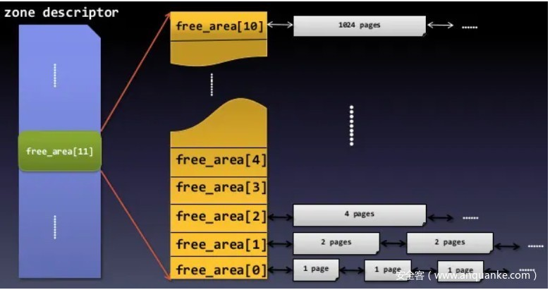
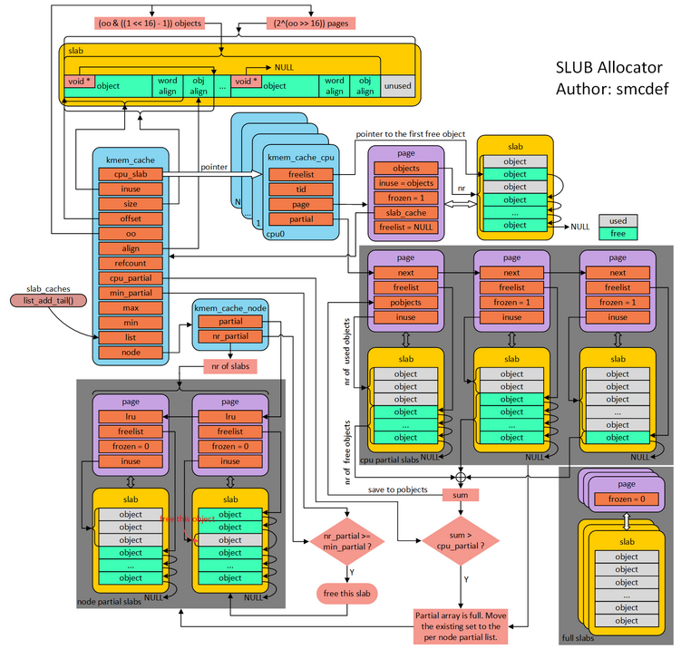

linux内核学习-二
前言
这篇博客主要学习Linux内核对于物理内存的管理机制——其同样将物理内存以页(页框)为单位，进行管理和分配
这里在额外说明一下——无论是内核态，亦或是用户态，其访问的都是线性地址(逻辑地址几乎不使用)，因此是需要进行分页转换的。
但是对于内核态来说稍显特殊，其映射基本就是(线性地址 = 物理地址 + 内核载入线性地址)，并且分页映射基本不改变(x86下会有一部分内存专门用来进行动态映射)
其原因很简单，内核需要始终保持在内存中——例如，如果内核中处理中断的程序被换入swap分区，则直接😥
因此，实际上管理内核虚拟存储，就是管理物理页框
struct page
Linux内核为了可以正常的管理内存，必须记录每个页框的状态，其通过位于include/linux/mm_types.h路径的struct page结构体，来管理每一个页框。下面简单分析一下其几个重要的字段
| 类型 | 成员名称 | 描述 |
|---|---|---|
| unsigned long | flags | 一组标号，表示当前页框的状态 |
| atomic_t | _refcount | 页框的引用计数 |
| atomic_t | _mapcount | 在页表中被映射的次数 |
| unsigned long | private | 根据页框的使用类型而不同 如果该页框是缓冲页，则表示缓冲器头指针 如果页框未被占用，则表示buddy系统的次序 |
| struct address_space * | mapping | 根据页框的使用类型不同而不同 如果该页框用于页高速缓存时使用 如果该页框用于匿名页面时使用 |
| pgoff_t | index | 根据页框的使用类型不同而不同 如果该页框用于页高速缓存时使用 如果该页框用于匿名页面时使用 |
| struct list_head | lru | 包含页的最近最少使用(LRU)双向链表的指针 |
Non-Uniform Memory Access
实际上，对于部分体系结构上，给定CPU对不同内存单元的访问时间可能不一致。
为此，Linux将系统的物理内存划分为几个节点(node)——在每一个节点中，任意给定的CPU，访问节点内的页框时间都是相同的；但是不同的CPU之间，该时间可能仍然不一致
其通过位于include/linux/mmzone.h路径的struct pglist_data结构体来管理每一个节点。下面简单分析一下其几个重要的字段
| 类型 | 成员名称 | 描述 |
|---|---|---|
| struct zone[] | node_zones | 节点中管理区(Zone)描述符的数组 |
| struct zonelist[] | node_zonelists | 页分配器使用的zonelist数组结构的数组 |
| int | nr_zones | 节点中管理区的个数 |
| struct page * | node_mem_map | 节点中页描述符数组 |
| unsigned long | node_start_pfn | 节点中第一个页框的下标 |
| unsigned long | node_present_pages | 不包括洞(hole)的内存页框个数 |
| unsigned long | node_spanned_pages | 包括洞(hole)的内存页框个数 |
| int | node_id | 节点标识符 |
| wait_queue_head_t | kswapd_wait | kswapd页换出守护进程使用的等待队列 |
| struct task_struct * | kswapd | 指向kswapd内核线程的进程描述符 |
| int | kswapd_max_order | kswapd将要创建的空闲块大小的对数值 |
struct zone
理想情况下，一个页框就是一个内存存储单元，可用于存放任何种类的数据页。
但实际上，计算机体系结构会有一些硬件限制，从而制约页框可以使用的方法——例如在80x86体系中，ISA总线的直接内存存取(DMA)只能对内存的前16MB寻址
为了应对相关的硬件约束，Linux将每个内存节点划分成不同的管理区(zone)，通过位于include/linux/mmzone.h路径的struct zone结构体，来管理节点中不同约束的内存区域。下面简单介绍几个重要的字段
| 类型 | 成员名称 | 描述 |
|---|---|---|
| const char * | name | 管理区的传统名称，例如”DMA”等 |
| unsigned long | spanned_pages | 包括洞的管理区的总页数 |
| unsigned long | present_pages | 不包括洞的管理区的总页数 |
| struct free_area[] | free_area | 管理区中的空闲页框块 |
| spinlock_t | lock | 管理区的自选锁 |
| struct per_cpu_pages __percpu * | per_cpu_pageset | per-CPU页框高速缓存，存放着本地CPU可直接使用的单个页框高速缓存 |
伙伴系统(buddy system)
在前言中介绍过，内核部分的页表尽量不要修改。因此，为了尽可能的减少外部碎片，需要使用合理的算法来管理内存，从而可以有效地分配连续的大内存
因此，Linux使用伙伴系统(buddy system)算法来管理空闲的页框，从而更好的分配连续页框
struct free_area
实际上，在每一个zone结构体中，都包含有一个struct free_area[]类型的字段，其就是伙伴系统的关键数据

其中，free_area数组的第k个元素，其标示着大小为的连续空闲页框的起始页描述符，其位于include/linux/mmzone.h路径的struct free_area的结构体有如下两个字段
| 类型 | 成员名称 | 描述 |
|---|---|---|
| struct list_head[] | free_list | 其包含不同属性连续空闲页框的链表 其每一个元素，都指向连续空闲页框的起始页描述符的lru字段 |
| unsigned long | nr_free | 该buddy结构中，存储的连续空闲页框的个数 |
__rmqueue
buddy算法通过位于mm/page_alloc.c的static __always_inline struct page *__rmqueue(struct zone *zone, unsigned int order, int migratetype, unsigned int alloc_flags)函数分配连续的页框
下面给出简化了非常多细节的逻辑1
2
3
4
5
6
7
8
9
10
11
12
13
14
15
16
17
18
19
20
21
22static __always_inline struct page *
__rmqueue(struct zone *zone, unsigned int order, int migratetype,
unsigned int alloc_flags)
{
unsigned int current_order;
struct free_area *area;
struct page *page;
/* Find a page of the appropriate size in the preferred list */
for (current_order = order; current_order < MAX_ORDER; ++current_order) {
area = &(zone->free_area[current_order]);
page = get_page_from_free_area(area, migratetype);
if (!page)
continue;
del_page_from_free_list(page, zone, current_order);
expand(zone, page, order, current_order, migratetype);
set_pcppage_migratetype(page, migratetype);
return page;
}
return NULL;
}
其基本思路就是从当前order开始遍历zone的free_area数组，找到第一个有空闲的连续空闲页框链表，并摘下链首元素。
如果当前连续空闲页框大小过大，则二分该连续空闲页框，并将二分的后半部分连续空闲页框插入到对应的zone的free_area数组的对应下标中即可，二分的前半部分继续执行上述操作即可直到符合大小为止。
__free_one_page
buddy算法通过位于mm/page_alloc.c路径的static inline void __free_one_page(struct page *page, unsigned long pfn, struct zone *zone, unsigned int order, int migratetype, fpi_t fpi_flags)函数，释放连续的页框
下面给出简化后的逻辑1
2
3
4
5
6
7
8
9
10
11
12
13
14
15
16
17
18
19
20
21
22
23
24
25
26
27
28
29
30static inline void __free_one_page(struct page *page,
unsigned long pfn,
struct zone *zone, unsigned int order,
int migratetype, fpi_t fpi_flags)
{
while (order < max_order) {
buddy_pfn = __find_buddy_pfn(pfn, order);
buddy = page + (buddy_pfn - pfn);
if (!page_is_buddy(page, buddy, order))
goto done_merging;
/*
* Our buddy is free or it is CONFIG_DEBUG_PAGEALLOC guard page,
* merge with it and move up one order.
*/
if (page_is_guard(buddy))
clear_page_guard(zone, buddy, order, migratetype);
else
del_page_from_free_list(buddy, zone, order);
combined_pfn = buddy_pfn & pfn;
page = page + (combined_pfn - pfn);
pfn = combined_pfn;
order++;
}
done_merging:
set_buddy_order(page, order);
add_to_free_list(page, zone, order, migratetype);
}
其基本思路就是通过异或操作，快速找到相邻的伙伴块的struct page的线性地址，判断是否位于符合条件的buddy链表中，然后从链表中摘下并合并，继而继续执行上述操作，直到无法进行合并。最后将合并结束的连续页框插入即可
每CPU页框高速缓存(per-CPU page frame cache)
实际上，linux kernel为每个内存管理区(zone)提供了不同类型的高速缓存，用于高效的请求和释放小页框
struct per_cpu_pages
每CPU页框高速缓存通过include/linux/mmzone.h路径的struct per_cpu_pages结构体进行管理
该结构体是内存管理区(zone)的per_cpu_pageset字段的指针类型，下面介绍相关的重要字段
| 类型 | 成员名称 | 描述 |
|---|---|---|
| int | count | 页框高速缓存中页框个数 |
| int | high | 上限。如果页框个数大于上界，则需要释放部分页框到buddy系统中 |
| int | batch | 在高速缓存要添加/删除的页框个数 |
| struct list_head[] | lists | 页框描述符链表 |
rmqueue_pcplist
每cpu页框高速缓存通过位于mm/page_alloc.c路径的static struct page *rmqueue_pcplist(struct zone *preferred_zone, struct zone *zone, unsigned int order, gfp_t gfp_flags, int migratetype, unsigned int alloc_flags)函数，从每CPU高速缓存中申请内存
下面给出简化后的逻辑1
2
3
4
5
6
7
8
9
10
11
12
13
14
15
16
17
18
19
20
21
22
23
24
25
26
27
28
29
30
31
32
33
34
35
36static struct page *rmqueue_pcplist(struct zone *preferred_zone,
struct zone *zone, unsigned int order,
gfp_t gfp_flags, int migratetype,
unsigned int alloc_flags)
{
pcp = this_cpu_ptr(zone->per_cpu_pageset);
pcp->free_factor >>= 1;
list = &pcp->lists[order_to_pindex(migratetype, order)];
do {
if (list_empty(list)) {
int batch = READ_ONCE(pcp->batch);
int alloced;
/*
* Scale batch relative to order if batch implies
* free pages can be stored on the PCP. Batch can
* be 1 for small zones or for boot pagesets which
* should never store free pages as the pages may
* belong to arbitrary zones.
*/
if (batch > 1)
batch = max(batch >> order, 2);
alloced = rmqueue_bulk(zone, order,
batch, list,
migratetype, alloc_flags);
pcp->count += alloced << order;
if (unlikely(list_empty(list)))
return NULL;
}
page = list_first_entry(list, struct page, lru);
list_del(&page->lru);
pcp->count -= 1 << order;
} while (check_new_pcp(page));
}
其大体思路是——如果每CPU页框高速缓存中存在，则直接分配即可；否则，通过buddy算法连续申请多个，插入到每CPU页框高速缓存的对应链表中
free_unref_page_commit
每cpu页框高速缓存通过位于mm/page_alloc.c路径的static void free_unref_page_commit(struct page *page, unsigned long pfn, int migratetype, unsigned int order)函数，向每CPU高速缓存中释放内存
下面给出简化后的逻辑1
2
3
4
5
6
7
8
9
10
11
12
13
14static void free_unref_page_commit(struct page *page, unsigned long pfn,
int migratetype, unsigned int order)
{
pcp = this_cpu_ptr(zone->per_cpu_pageset);
pindex = order_to_pindex(migratetype, order);
list_add(&page->lru, &pcp->lists[pindex]);
pcp->count += 1 << order;
high = nr_pcp_high(pcp, zone);
if (pcp->count >= high) {
int batch = READ_ONCE(pcp->batch);
free_pcppages_bulk(zone, nr_pcp_free(pcp, high, batch), pcp);
}
}
其大体思路是——先将空闲页框释放到每CPU页框高速缓存中；如果此时每CPU页框高速缓存大于上界，则将多余的页框插入到buddy中
管理区分配器(zone allocator)
管理区分配器是内核的页框分配的前端——其根据不同的参数以及内核当前页框使用状况，调用不同的前面介绍的具体的页框分配算法
alloc_pages
管理区分配器的前端是通过位于include/linux/gfp.h的struct page *alloc_pages(gfp_t gfp, unsigned int order)实现的
其简化后的逻辑如下所示1
2
3
4
5
6
7
8
9
10
11
12
13
14
15
16
17
18
19
20
21
22
23
24
25
26
27
28
29
30
31
32
33
34
35
36
37
38
39
40
41
42
43
44
45
46
47
48
49
50
51
52
53
54
55
56
57
58
59
60
61
62
63
64
65
66
67
68
69
70
71
72
73
74
75
76
77
78
79
80
81
82
83
84
85
86
87
88
89
90
91
92
93
94
95
96
97
98
99
100
101
102
103
104
105
106static inline struct page *alloc_pages(gfp_t gfp_mask, unsigned int order)
{
return alloc_pages_node(numa_node_id(), gfp_mask, order);
}
static inline struct page *alloc_pages_node(int nid, gfp_t gfp_mask,
unsigned int order)
{
if (nid == NUMA_NO_NODE)
nid = numa_mem_id();
return __alloc_pages_node(nid, gfp_mask, order);
}
static inline struct page *
__alloc_pages_node(int nid, gfp_t gfp_mask, unsigned int order)
{
VM_BUG_ON(nid < 0 || nid >= MAX_NUMNODES);
VM_WARN_ON((gfp_mask & __GFP_THISNODE) && !node_online(nid));
return __alloc_pages(gfp_mask, order, nid, NULL);
}
struct page *__alloc_pages(gfp_t gfp, unsigned int order, int preferred_nid,
nodemask_t *nodemask)
{
gfp_t alloc_gfp; /* The gfp_t that was actually used for allocation */
gfp &= gfp_allowed_mask;
/*
* Apply scoped allocation constraints. This is mainly about GFP_NOFS
* resp. GFP_NOIO which has to be inherited for all allocation requests
* from a particular context which has been marked by
* memalloc_no{fs,io}_{save,restore}. And PF_MEMALLOC_PIN which ensures
* movable zones are not used during allocation.
*/
gfp = current_gfp_context(gfp);
alloc_gfp = gfp;
if (!prepare_alloc_pages(gfp, order, preferred_nid, nodemask, &ac,
&alloc_gfp, &alloc_flags))
return NULL;
/*
* Forbid the first pass from falling back to types that fragment
* memory until all local zones are considered.
*/
alloc_flags |= alloc_flags_nofragment(ac.preferred_zoneref->zone, gfp);
/* First allocation attempt */
page = get_page_from_freelist(alloc_gfp, order, alloc_flags, &ac);
if (likely(page))
goto out;
out:
if (memcg_kmem_enabled() && (gfp & __GFP_ACCOUNT) && page &&
unlikely(__memcg_kmem_charge_page(page, gfp, order) != 0)) {
__free_pages(page, order);
page = NULL;
}
return page;
}
static struct page *
get_page_from_freelist(gfp_t gfp_mask, unsigned int order, int alloc_flags,
const struct alloc_context *ac)
{
retry:
/*
* Scan zonelist, looking for a zone with enough free.
* See also __cpuset_node_allowed() comment in kernel/cpuset.c.
*/
no_fallback = alloc_flags & ALLOC_NOFRAGMENT;
z = ac->preferred_zoneref;
for_next_zone_zonelist_nodemask(zone, z, ac->highest_zoneidx,
ac->nodemask) {
if(zone_watermark_ok(zone, order, mark, ...)) {
if (likely(pcp_allowed_order(order))) {
page = rmqueue_pcplist(preferred_zone, zone, order,
gfp_flags, migratetype, alloc_flags);
}else {
do {
page = NULL;
/*
* order-0 request can reach here when the pcplist is skipped
* due to non-CMA allocation context. HIGHATOMIC area is
* reserved for high-order atomic allocation, so order-0
* request should skip it.
*/
if (order > 0 && alloc_flags & ALLOC_HARDER) {
page = __rmqueue_smallest(zone, order, MIGRATE_HIGHATOMIC);
}
if (!page)
page = __rmqueue(zone, order, migratetype, alloc_flags);
} while (page && check_new_pages(page, order));
}
if(page)
return page;
}
}
}
其大体思路是——遍历所有管理区(zone)，符合每CPU页框高速缓存的，先从这里进行申请；否则，尝试使用buddy算法进行申请即可
当然，中间省略了非常多的细节实现，在需要时进行阅读即可
free_pages
其管理区分配器释放页框的前端位于mm/page_alloc.c的void free_pages(unsigned long addr, unsigned int order)
其简化后的逻辑如下所示1
2
3
4
5
6
7
8
9
10
11
12
13
14
15
16void free_pages(unsigned long addr, unsigned int order)
{
if (addr != 0) {
__free_pages(virt_to_page((void *)addr), order);
}
}
void __free_pages(struct page *page, unsigned int order)
{
if (put_page_testzero(page))
free_the_page(page, order);
else if (!PageHead(page))
while (order-- > 0)
free_the_page(page + (1 << order), order);
}
其大体思路是——其页框描述符的_refcount字段自减1；如果等于0，则根据其order的值，释放到每CPU页框高速缓存或buddy中
slub分配器
可以看到，前面的内存管理都是以页框为单位，而这会导致很多内部碎片
因此，Linux添加了slub分配器——其将内存区看做对象，并认为内核函数会反复请求同一个类型的对象，因此将释放的对象缓存起来，而非释放并合并
slub分配器的组成如下所示

struct kmem_cache
slub通过位于include/linux/slub_def.h的struct kmem_cache结构体，存储slub的控制信息
下面介绍该结构体的几个重要字段
| 类型 | 成员名称 | 描述 |
|---|---|---|
| struct kmem_cache_cpu __percpu * | cpu_slab | 是slab链表，保存每个CPU的本地slab |
| slab_flags_t | flags | 高速缓存常量属性的一组标志 |
| unsigned long | min_partial | 每个node节点中部分空slab缓冲区数量的下界 |
| unsigned int | size | object对齐后大小 |
| unsigned int | object_size | object实际的大小 |
| unsigned int | offset | slub使用类似于FAT表管理空闲object，即每一个空闲object中写入下一个空闲object相对于slab的偏移 offset存储该slab中空闲链表的第一个object的偏移 |
| unsigned int | cpu_partial | 即cpu_slab链表的个数上界 |
| struct kmem_cache_order_objects | oo | 低16位表示一个slab中object的数量 高16位表示一个slab管理的页框数量 |
| gfp_t | allocflags | 向buddy分配内存时传递的参数 |
| int | refcount | |
| void ()(void ) | ctor | 创建slab时的构造函数 |
| unsigned int | red_left_pad | left redzone的padding大小 |
| const char * | name | 高速缓存的名称 |
| struct list_head | list | 将当前结构体链接到slab_caches链表中 |
| struct kmem_cache_node *[] node | 每个node的共享对象缓冲池 |
struct kmem_cache_cpu
即struct kmem_cache的cpu_slab字段的相关结构体，用于管理每个CPU的本地slab，其结构位于include/linux/slub_def.h，其重要的字段含义如下所示
| 类型 | 成员名称 | 描述 |
|---|---|---|
| void ** | freelist | 指向slab中空闲链表的链首object |
| unsigned long | tid | 用于校验的字段，用来判断tid和kmem_cache是否由同一个CPU访问 |
| struct page * | page | 指向当前对应的slab所使用的页框描述符 |
| struct page * | partial | 指向部分使用的slab链表 |
struct kmem_cache_node
即struct kmem_cache的node字段的相关结构体，管理着一个节点(node)内的部分使用的slab链表，其结构位于mm/slab.h，其重要的字段含义如下所示
| 类型 | 成员名称 | 描述 |
|---|---|---|
| spinlock_t | list_lock | 自旋锁 |
| unsigned long | nr_partial | 部分使用的slab链表的节点数量 |
| struct list_head | partial | 部分使用的slab链表的链首 |
kmem_cache_alloc
slub通过位于mm/slub.c的void *kmem_cache_alloc(struct kmem_cache *s, gfp_t gfpflags)分配内存
具体的逻辑可以查看slub分配流程，这篇博主讲的非常清晰
其大体的思路类似于缓存——首先查看CPU的本地slab，即struct kmem_cache_cpu的page字段是否存在可分配object；如果不存在，则在struct kmem_cache_cpu的partial字段中查找，如果存在，则重新缓存到CPU的本地slab；如果还不能存在，则在struct kmem_cache_node中进行查找，如果存在，仍然缓存到CPU的本地slab中；如果还不存在，则向buddy申请slab，并重新缓存到CPU的本地slab上
kmem_cache_free
slub通过位于mm/slub.c的void kmem_cache_free(struct kmem_cache *s, void *x)释放对象
具体的逻辑仍然可以查看slub释放流程，这篇博主讲的非常清晰
其大体的思路仍然类似于缓存——根据该object所述的页框描述符，获object所述的slab情况：如果该slab就是CPU的本地slab，则直接释放即可；否则直接释放到slab中，其中如果该slab在释放前全被object都是使用的，则将slab插入到struct kmem_cache_cpu的partial字段中即可。当然，后续还会根据其余一些字段释放掉slab没有正在使用的slab内存，这里就不详细介绍
非连续内存
虽然根据前面的介绍，Linux希望其内核态的线性空间可以映射到连续的一组页框，并且尽可能保持不变。
但是在32位机器下，这是不现实的。因此Linux提供了将不连续的页框映射到连续的线性地址的功能
struct vm_struct
每个非连续物理页框的内存区，都通过位于include/linux/vmalloc.h的结构体进行管理。下面列出其关键字段
| 类型 | 成员名称 | 描述 |
|---|---|---|
| void * | addr | 内存区内第一个内存单元的线性地址 |
| unsigned long | size | 内存区的实际大小 + 4096B(内存区之间的安全区间的大小) |
| unsigned long | flags | 非连续内存区映射的内存类型 |
| struct page ** | pages | 非连续页框内存区对应的页框链表 |
| unsigned int | nr_pages | 内存区填充的页个数 |
| struct vm_struct * | next | 指向下一个struct vm_struct结构指针 |
对于非连续页框的内存释放和分配，其大体逻辑应该比较简单(但是源代码看不懂。。)——也就是依次按页为单位申请页框，在分别修改页表的映射即可